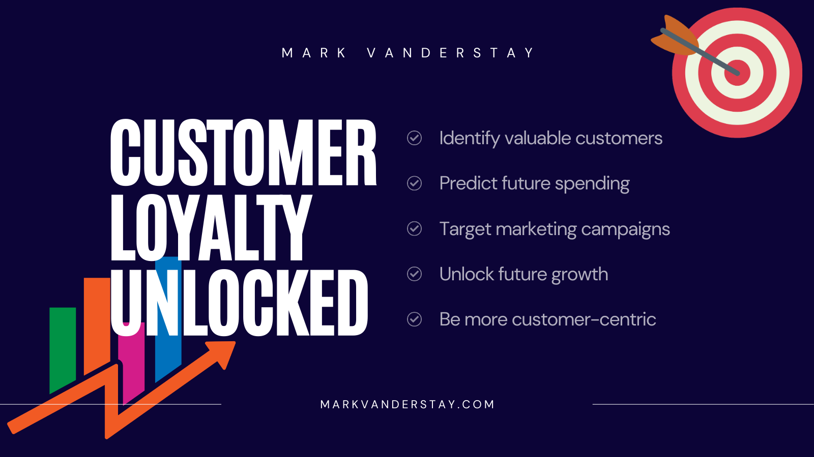
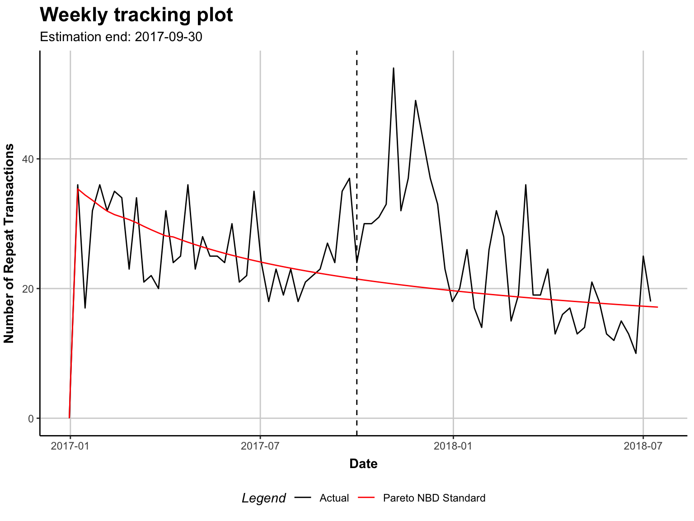

library(CLVTools)
Introduction
Making the most of customer relationships with CLV
As a data scientist working in the e-commerce industry, you possess the unique ability to turn raw data into meaningful insights that can drive business growth. One area where your expertise can have a significant impact is in understanding and predicting Customer Lifetime Value (CLV).
In today’s fast-paced and competitive e-commerce landscape, developing strategies that make the most of customer relationships is crucial to long-term success. By harnessing the power of CLV, you can help businesses better target their marketing efforts, retain loyal customers, and ultimately increase overall revenue.
In this blog post, I will guide you step-by-step through the process of measuring and predicting CLV, ensuring you have the tools and knowledge needed to become a valuable asset in the e-commerce industry. Our approach will be informative, practical, and designed to cater to your analytical mindset, providing you with a comprehensive understanding of the techniques and methodologies involved in CLV analysis.
Join me on this journey into the realm of customer loyalty, as I equip you with the skills needed to master CLV and contribute to the sustainable growth and success of any e-commerce business.
1. In the beginning…
As ever, the best way to start is to install the necessary packages. CLVTools1 is where it’s at. You know the drill.
The next step is to load the transaction data which has been formatted to show a purchase date and customer ID in every row. At this point a transaction cost isn’t necessary but I have yet to find a store owner who provided transaction data without price values. Price is optional here. However, when provided, this variable will allow prediction of future spending. I’ll cover that here in this post when I delve into the predictive side of CLV.
transactions <- read.csv("./data/transactions.csv")
head(transactions) Id Date Price
1 1 2017-01-12 20.86
2 2 2016-12-31 51.18
3 2 2016-12-31 44.00
4 3 2016-12-31 102.87
5 4 2017-01-12 43.80
6 4 2017-02-08 10.50As you can see, there’s one observation per transaction and customer ID will be repeated for multiple transactions.
2. Create a clv.data object
Creating a Customer Lifetime Value (CLV) data object is straightforward but it helps to know a little of the intricacies. The process involves splitting the transaction data into estimation and holdout samples using the estimation.split parameter.
In the example below I’ve set the estimation.split to be 39 weeks. The first 39 weeks of data will be used to create the estimation sample while the remaining data becomes the holdout sample.
# Create a CLV data object, split data into estimation and holdout samples
clv.trans <- clvdata(data.transactions = transactions,
date.format = "ymd",
time.unit = "week",
estimation.split = 39,
name.id = "Id")
Estimation & Holdout
Estimation sample: This sample is used to estimate the parameters of the CLV model. It’s the portion of data on which the model is trained and built.
Holdout sample: This sample is used to evaluate the performance and accuracy of the CLV model. It’s the portion of data that the model has not seen during the estimation process and acts as a validation set.
How did I decide that 39 weeks is the right value to use? It’s a ‘best guess’. To decide on a good value for estimation.split means looking at the data, the business and the business goals. Here’s a few factors to consider:
Data availability: The estimation.split value should be chosen such that there is sufficient data available for both the estimation and holdout samples. A larger dataset usually allows for a more robust model with more accurate validation.
Seasonality and trends: Is the business seasonal, with seasonal patterns or trends? If so, it’s crucial to ensure that the estimation and holdout samples capture these variations. Doing so may require selecting an estimation.split value that includes multiple cycles of seasonality.
Model stability: A good
estimation.splitvalue should result in a model that is stable and reliable. I can assess this by comparing model performance across different split values and selecting the one that yields the most consistent and accurate results.
While the algorithm can handle some inaccuracy when setting the estimation.split value, the more accurate it is to start with, the better the results will be. Of course, better results at this point will mean a more accurate model and improved decision-making and business outcomes. While there are methods to mitigate the effects of inaccurate estimate.split values, in my experience it’s just good practice to get it right first time and avoid messing around with other metrics such as mean squared error, mean absolute error, or root mean squared error later.
# summary of data
summary(clv.trans)CLV Transaction Data
Time unit Weeks
Estimation length 39.0000 Weeks
Holdout length 40.71429 Weeks
Transaction Data Summary
Estimation Holdout Total
Number of customers - - 263
First Transaction in period 2016-12-31 2017-10-01 2016-12-31
Last Transaction in period 2017-09-30 2018-07-13 2018-07-13
Total # Transactions 1293 976 2269
Mean # Transactions per cust 4.916 8.342 8.627
(SD) 5.792 9.094 12.353
Mean Spending per Transaction 39.713 38.989 39.401
(SD) 42.253 58.977 50.124
Total Spending 51348.290 38053.580 89401.870
Total # zero repeaters 87 - -
Percentage of zero repeaters 33.080 - -
Mean Interpurchase time 7.308 5.447 9.403
(SD) 6.767 5.432 12.197 I’ve been provided with data for 263 customers and 2269 transactions. Just over 33% are zero-repeaters that is, customers who purchased once but have not returned since. The mean spending per transaction was £39.71 in the estimation period and £38.99 in the holdout period. Overall mean spending per transaction was £39.40. I already have some valuable insights into customer behaviour and spending patterns but I can take this further. Much further.
3. Fit a Pareto/NBD model
Now I have my clvdata() object, I can estimate a model using the standard Pareto/NBD model. For this I will use the the pnbd() command and pass it the object created in the previous step as the first argument. Starting values for model parameters are provided using the arguments start.params.model with a vector of values. I find that this can be useful if prior knowledge on distribution parameters is available but I don’t worry too much if I can’t be accurate. While these initial values impact the convergence of the model fitting process, they are simply best guesses. in practice,
Tip
I find it can be challenging to obtain accurate starting values. The defaults often work well enough in many scenarios.
# PNBD model fit on the first 39 periods
pnbd.trans <- pnbd(clv.trans,
start.params.model = c(r=0.5, alpha=8, s=0.5, beta=10))Starting estimation...Estimation finished!
Note
The start.params.model parameters are as follows:
- r
-
Shape parameter for the Gamma distribution of the transaction rate (𝛌)
- alpha
-
Scale parameter for the Gamma distribution of the transaction rate (𝛌)
- s
-
Shape parameter for the Gamma distribution of the lifetime (𝜇)
- beta
-
Scale parameter for the Gamma distribution of the lifetime (𝜇)
The values you and I provide for these parameters will serve as the starting point for the estimation process. The optimisation algorithm will iterate from these starting values to find the best-fitting parameters for the data so don’t be too concerned about calculating them accurately beforehand.
# Plot the fitted model to the actual repeat transactions
plot(pnbd.trans)Plotting from 2016-12-31 until 2018-07-15.
The tracking plot is the default option when plotting the fitted model. It shows the repeated transactions by real customers against the models’ predicted transactions.
Overall it doesn’t look too bad. There’s a peak of repeated transactions at the end of 2017 and the beginning of 2018 but I suspect this could be due to the festive holiday and the related Christmas madness. It doesn’t look unusual to me and I will mark it down as ‘seasonality’ and shrug it off after confirming with the business owner.
4. Interpreting the model
# inspect fit
summary(pnbd.trans)Pareto NBD Standard Model
Call:
pnbd(clv.data = clv.trans, start.params.model = c(r = 0.5, alpha = 8,
s = 0.5, beta = 10))
Fitting period:
Estimation start 2016-12-31
Estimation end 2017-09-30
Estimation length 39.0000 Weeks
Coefficients:
Estimate Std. Error z-val Pr(>|z|)
r 0.7513 0.1260 5.961 2.50e-09 ***
alpha 5.2628 0.8871 5.932 2.99e-09 ***
s 0.3730 0.1895 1.969 0.049 *
beta 11.0325 10.0368 1.099 0.272
---
Signif. codes: 0 '***' 0.001 '**' 0.01 '*' 0.05 '.' 0.1 ' ' 1
Optimization info:
LL -2828.5777
AIC 5665.1553
BIC 5679.4439
KKT 1 TRUE
KKT 2 TRUE
fevals 17.0000
Method L-BFGS-B
Used Options:
Correlation FALSENow I see the r, alpha, s and beta that the algorithm arrived at. From these I can derive a couple of important pieces of info:
Average purchase rate (𝑟/⍺) = 0.143 transactions
Average attrition rate (𝒔/𝞫) = 0.034 per customer per week
Optimisation criteria were met. KKT1 & 2 are TRUE.
So that’s nice. Let’s go further still and to some more juicy, predictive analytics!
5. Get predictive!
prediction.trans <- predict(pnbd.trans)Predicting from 2017-10-01 until (incl.) 2018-07-13 (40.86 Weeks).Estimating gg model to predict spending...Starting estimation...Estimation finished!head(prediction.trans) Id period.first period.last period.length actual.x actual.total.spending
1: 1 2017-10-01 2018-07-13 40.85714 0 0.00
2: 10 2017-10-01 2018-07-13 40.85714 0 0.00
3: 100 2017-10-01 2018-07-13 40.85714 23 750.27
4: 1000 2017-10-01 2018-07-13 40.85714 24 1116.87
5: 1001 2017-10-01 2018-07-13 40.85714 11 369.60
6: 1002 2017-10-01 2018-07-13 40.85714 0 0.00
PAlive CET DERT predicted.mean.spending predicted.CLV
1: 0.36160395 0.2305102 0.05989818 40.25354 2.411114
2: 0.04368167 0.1111880 0.02900386 35.55456 1.031220
3: 0.94346385 12.3342954 3.22145319 46.68502 150.393616
4: 0.98009916 12.6347184 3.27800310 42.40391 139.000145
5: 0.54793815 3.9244903 1.01818583 46.15505 46.994418
6: 0.42913180 1.3175031 0.34181840 37.16120 12.702380
Note
- CET
-
Conditional Expected Transactions is the number of transactions to expect from a customer during the prediction period
- PAlive
-
Probability of a customer being alive (active) at the end of the estimation period
- DERT
-
Discounted Expected Residual Transactions is the total number of transactions for the remaining (residual) lifetime of a customer discounted to the end of the estimation period
- actual.predicted.mean.spending
-
Predicted mean spending estimated by the Gamma/Gamma model
- actual.𝔁
-
the number of actual transactions
- actual.total.spending
-
the true spending amount
- CLV
-
Calculated as the product of DERT and predicted spending
And there we have it. A predicted value for the amount of money a customer is expected to spend over the course of their relationship with a business. Adding covariates to the predictive model could be a useful next step. I’ll save that task for another post.
6. Conclusion
By measuring CLV, the the analyst is able to help the business owner to identify their most valuable customers and implement targeted marketing campaigns to retain customer loyalty and increase overall revenue. Owners may also discover that it is more cost-effective to retain existing customers than to acquire new ones, which leads to a shift in their marketing strategy. By measuring CLV, the business owner is able to make more informed decisions that positively impact their bottom line
Measuring CLV should be a critical component of any e-commerce business’ marketing strategy. However, many small businesses neglect this simple step and fail to segment their marketing accordingly. By understanding the value of their customers over time, businesses can better target their marketing efforts, retain loyal customers, and increase overall revenue. CLV analysis is a powerful tool that can help businesses make more informed decisions and stay competitive in a crowded marketplace.
Footnotes
https://cran.r-project.org/web/packages/CLVTools/index.html↩︎